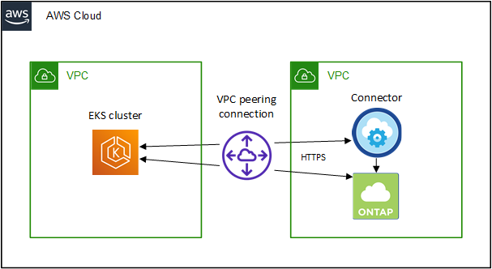

请求文档变更
请求文档变更 在 GitHub 上编辑
在 GitHub 上编辑 提供者指南
提供者指南使用 Cloud Volumes ONTAP 作为 Kubernetes 的永久性存储
Cloud Manager 可以在 Kubernetes 集群上自动部署 NetApp Trident ，以便将 Cloud Volumes ONTAP 用作容器的永久性存储。

|
此功能已弃用，将在未来版本中删除。它已被替换为可以将受管 Kubernetes 集群添加到 Canvas 中，作为高级数据管理的工作环境。 "了解更多信息。"。 |
Trident 是由 NetApp 维护的一个受全面支持的开源项目。Trident 与 Kubernetes 及其永久性卷框架本机集成，可从运行 NetApp 存储平台任意组合的系统无缝配置和管理卷。 "了解有关 Trident 的更多信息"。
快速入门
按照以下步骤快速入门，或者向下滚动到其余部分以了解完整详细信息。
确保您的环境可以满足以下前提条件： Kubernetes 集群和 Cloud Volumes ONTAP 之间的连接， Kubernetes 集群和 Connector 之间的连接，最低 Kubernetes 版本 1.14 ，集群中至少有一个工作节点等。 请参见完整列表。
在 Cloud Manager 中，单击 * 。 K8* 并直接从云提供商的托管服务发现集群，或者通过提供 kubeconfig 文件导入集群。
添加 Kubernetes 集群后，单击 * 连接到工作环境 * 将集群连接到一个或多个 Cloud Volumes ONTAP 系统。
使用原生 Kubernetes 接口和构造请求和管理永久性卷。Cloud Manager 可创建 NFS 和 iSCSI 存储类，您可以在配置永久性卷时使用这些存储类。
查看前提条件
开始之前，请确保 Kubernetes 集群和 Connector 满足特定要求。
Kubernetes 集群要求
-
Kubernetes 集群和 Connector 之间以及 Kubernetes 集群和 Cloud Volumes ONTAP 之间需要网络连接。
Connector 和 Cloud Volumes ONTAP 都需要连接到 Kubernetes API 端点：
-
对于受管集群，请在集群的 VPC 与连接器和 Cloud Volumes ONTAP 所在的 VPC 之间设置路由。
-
对于其他集群， Connector 和 Cloud Volumes ONTAP 必须能够访问主节点或负载平衡器的 IP 地址（如 kubeconfig 文件中所示），并且必须提供有效的 TLS 证书。
-
-
Kubernetes 集群可以位于具有上述网络连接的任何位置。
-
Kubernetes 集群必须至少运行 1.14 版。
支持的最大版本由 Trident 定义。 "单击此处可查看支持的 Kubernetes 最大版本"。
-
Kubernetes 集群必须至少具有一个工作节点。
-
对于在 Amazon Elastic Kubernetes Service （ Amazon EKS ）中运行的集群，每个集群都需要添加一个 IAM 角色才能解决权限错误。添加集群后， Cloud Manager 将使用可解决此错误的确切 eksctl 命令提示您。
-
对于在 Azure Kubernetes Service （ AKS ）中运行的集群，必须为这些集群分配 Azure Kubernetes Service RBAC Cluster Admin 角色。这是 Cloud Manager 在集群上安装 Trident 和配置存储类所必需的。
连接器要求
确保已为 Connector 设置以下权限。
发现和管理 EKS 集群所需的权限
Connector 需要管理员权限才能发现和管理在 Amazon Elastic Kubernetes Service （ EKS ）中运行的 Kubernetes 集群：
{
"Version": "2012-10-17",
"Statement": [
{
"Sid": "VisualEditor0",
"Effect": "Allow",
"Action": "eks:*",
"Resource": "*"
}
]
}发现和管理 GKE- 集群所需的权限
Connector 需要以下权限才能发现和管理在 Google Kubernetes Engine （ GKE） 中运行的 Kubernetes 集群：
container.*示例设置
下图显示了在 Amazon Elastic Kubernetes Service （ Amazon EKS ）中运行的 Kubernetes 集群及其与 Connector 和 Cloud Volumes ONTAP 的连接的示例。在此示例中， VPC 对等关系可在 EKS 集群的 VPC 与连接器和 Cloud Volumes ONTAP 的 VPC 之间提供连接。

正在添加 Kubernetes 集群
通过发现云提供商托管的 Kubernetes 服务中运行的集群或导入集群的 kubeconfig 文件，将 Kubernetes 集群添加到 Cloud Manager 中。
-
在 Cloud Manager 顶部，单击 * 。 K8s* 。
-
单击 * 添加集群 * 。
-
选择一个可用选项：
-
单击 * 发现集群 * 以根据您为 Connector 提供的权限发现 Cloud Manager 有权访问的受管集群。
例如，如果您的 Connector 在 Google Cloud 中运行，则 Cloud Manager 将使用 Connector 服务帐户中的权限来发现在 Google Kubernetes Engine （ GKE） 中运行的集群。
-
单击 * 导入集群 * 以使用 kubeconfig 文件导入集群。
上传文件后， Cloud Manager 会验证与集群的连接，并保存 kubeconfig 文件的加密副本。
-
Cloud Manager 将添加 Kubernetes 集群。现在，您可以将集群连接到 Cloud Volumes ONTAP 。
将集群连接到 Cloud Volumes ONTAP
将 Kubernetes 集群连接到 Cloud Volumes ONTAP ，以便将 Cloud Volumes ONTAP 用作容器的永久性存储。
-
在 Cloud Manager 顶部，单击 * 。 K8s* 。
-
单击刚刚添加的集群的 * 连接到工作环境 * 。
-
选择一个工作环境，然后单击 * 继续 * 。
-
选择要用作 Kubernetes 集群默认存储类的 NetApp 存储类，然后单击 * 继续 * 。
默认情况下，当用户创建永久性卷时， Kubernetes 集群可以使用此存储类作为后端存储。
-
选择是否使用默认自动导出策略或是否添加自定义 CIDR 块。
-
单击 * 添加工作环境 * 。
Cloud Manager 可将工作环境连接到集群，最长可能需要 15 分钟。
管理集群
通过 Cloud Manager ，您可以通过更改默认存储类，升级 Trident 等来管理 Kubernetes 集群。
更改默认存储类
确保已将 Cloud Volumes ONTAP 存储类设置为默认存储类，以便集群使用 Cloud Volumes ONTAP 作为后端存储。
-
在 Cloud Manager 顶部，单击 * 。 K8s* 。
-
单击 Kubernetes 集群的名称。
-
在 * 存储类 * 表中，单击最右侧要设置为默认值的存储类的 "Actions" 菜单。
-
单击 * 设置为默认值 * 。
升级 Trident
如果有新版本的 Trident ，您可以从 Cloud Manager 升级 Trident 。
-
在 Cloud Manager 顶部，单击 * 。 K8s* 。
-
单击 Kubernetes 集群的名称。
-
如果有新版本，请单击 Trident 版本旁边的 * 升级 * 。
正在更新 kubeconfig 文件
如果您通过导入 kubeconfig 文件将集群添加到 Cloud Manager ，则可以随时将最新的 kubeconfig 文件上传到 Cloud Manager 。如果您已更新凭据，更改了用户或角色，或者发生了影响集群，用户，命名空间或身份验证的更改，则可以执行此操作。
-
在 Cloud Manager 顶部，单击 * 。 K8s* 。
-
单击 Kubernetes 集群的名称。
-
单击 * 更新 Kubeconfig* 。
-
当 Web 浏览器出现提示时，选择更新后的 kubeconfig 文件，然后单击 * 打开 * 。
Cloud Manager 会根据最新的 kubeconfig 文件更新 Kubernetes 集群的相关信息。
断开集群连接
当您从 Cloud Volumes ONTAP 断开集群连接时，不能再将该 Cloud Volumes ONTAP 系统用作容器的永久性存储。不会删除现有永久性卷。
-
在 Cloud Manager 顶部，单击 * 。 K8s* 。
-
单击 Kubernetes 集群的名称。
-
在 * 工作环境 * 表中，单击最右侧要断开连接的工作环境的 "Actions" 菜单。
-
单击 * 断开连接 * 。
Cloud Manager 会断开集群与 Cloud Volumes ONTAP 系统的连接。
删除集群
在断开所有工作环境与集群的连接后，从 Cloud Manager 中删除已停用的集群。
-
在 Cloud Manager 顶部，单击 * 。 K8s* 。
-
单击 Kubernetes 集群的名称。
-
单击 * 删除集群 * 。